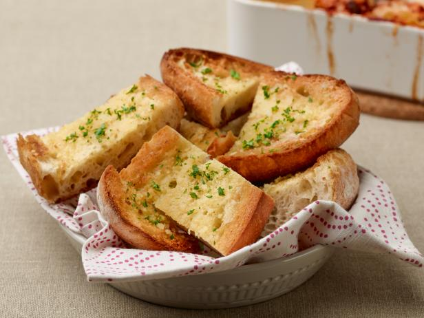

| Instructions | Helpful Pictures | Tips | |
|---|---|---|---|
| Step 1 | Crush and mince garlic (Mince means to cut up into tiny pieces) |
Place a knife on its side, over the garlic, and hit it with your palm. BE CAREFUL! | |
| Step 2 | Slice bread sandwich style | Try sticking the knife into the end and slicing inward and around. | Step 3 | Place bread in oven on Broil setting until golden brown | Use oven mitts! |
| Step 4 | Combine garlic, oil, and butter in a microwave safe dish | Make sure to stir the mixture well. | |
| Step 5 | Microwave for 1-2 minutes or until melted | Stir the mixture again when it comes out. | |
| Step 6 | If you don't have a brush, you can use a spoon or you can pour directly on the bread | ||
| Step 7 | Sprinkle cheese and herbs onto bread | Add as much cheese as you'd like. Now's a good time to put any other ingredient you'd like. | |
| Step 8 | Place back into oven for 30 seconds to brown | You can add cheese, sauces, herbs, or anything you'd like! | |
| Step 9 | Cut into pieces and serve |
 |
You can get fancy with it if you'd like, or just eat it right off the pan! |
For more recipes using garlic, check out Garlic, Garlic, Garlic by Linda and Fred Griffith.
Warning: Children under 12 should not use an oven or knives without parental supervision.